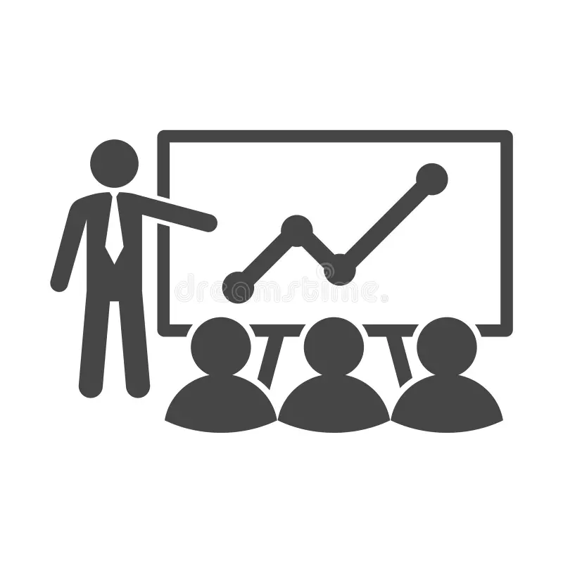
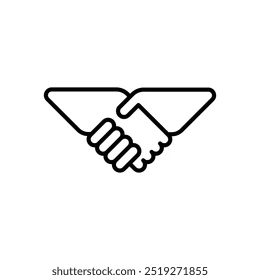

Activité 3 : Propositions pour dynamiser durablement le secteur K
Afin de dynamiser le secteur des activités financières et d’assurance de manière durable et responsable, plusieurs actions complémentaires peuvent être mises en œuvre. Ces propositions visent à améliorer la performance économique tout en répondant aux enjeux numériques, sociaux et environnementaux.
1. Accélérer la transition numérique
La transition numérique constitue un levier essentiel pour améliorer
la compétitivité du secteur K. La digitalisation permet de réduire
les coûts, d’améliorer la qualité des services et d’augmenter la
productivité des organisations.
2. Investir dans la formation et les compétences

La transformation du secteur nécessite une main-d’œuvre qualifiée,
capable de maîtriser les nouvelles technologies et de s’adapter
rapidement aux évolutions économiques et numériques.
3. Encourager l’innovation responsable

Pour concilier performance économique et respect de l’environnement,
il est essentiel de soutenir des projets intégrant des critères
d’écoresponsabilité.
4. Développer les partenariats publics-privés

La coopération entre acteurs publics et privés facilite la création
de solutions innovantes via des projets pilotes.
5. Renforcer la transparence et la confiance

La transparence renforce la confiance des utilisateurs et des
entreprises envers les acteurs financiers.
L’ensemble de ces actions, combinant modernisation numérique, développement des compétences, responsabilité écologique, coopération et transparence, permettrait de dynamiser durablement le secteur K tout en assurant un développement économique responsable.